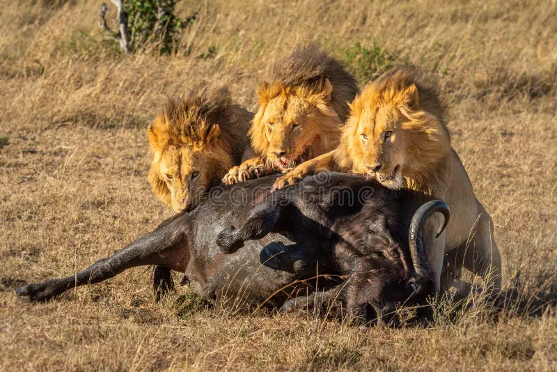
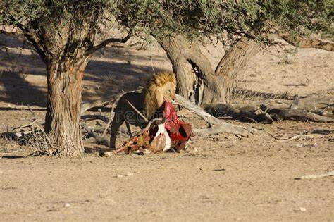

Lejonet, med sitt majestätiska utseende och kraftfulla närvaro, har länge varit en symbol för styrka, mod och regalitet i både mytologi och verklighet. Denna stora katt, som är en medlem av släktet Panthera och underfamiljen Pantherinae, har fångat människors fascination i århundraden. Låt oss utforska lejonets liv, beteende, sociala strukturer, och dess plats i ekosystemet. Lejonets Biologi och Utseende: Lejonet (Panthera leo) är den enda arten inom släktet Panthera som lever i grupper, kända som stoltheter. Denna storslagna kattdjur har en kraftfull kroppsbyggnad med en imponerande man, vilket vanligtvis karakteriserar hanarna. Hannarna är också kända för sina stora, kraftfulla huvuden och karakteristiska manar, medan honorna vanligtvis saknar manar eller har en mindre man. Pälsen på lejonet varierar i färg från ljusgul till mörkbrun, och dess päls hjälper det att smälta in i savannens gräs. Lejonets Habitat och Utbredning: Lejonet finns huvudsakligen på savanner, grässlätter och öppna skogar i Afrika söder om Sahara. Det har även historiskt funnits i mindre utsträckning i vissa delar av Mellanöstern. Dess anpassningsförmåga till olika livsmiljöer har gjort lejonet till en framstående art, och dess närvaro är ofta kopplad till tillgången på bytesdjur och vattenkällor. Lejonets Sociala Struktur och Stoltheter: En av de mest unika aspekterna av lejonets sociala beteende är dess tendens att leva i stoltheter. En typisk stolthet består ofta av ett antal vuxna hanar, deras honor och avkomma. Denna sociala struktur möjliggör samarbete inom gruppen för jakt och skydd. Hannarna inom stoltheten deltar ofta i att skydda territoriet och avkomman från yttre hot. Lejonets Jaktbeteende och Byten: Lejonet är en köttätare och är känt för att vara en skicklig jägare. De jagar ofta i grupp, vilket gör dem mer framgångsrika när de tar större byten som bufflar och zebror. Dess kraftfulla käkar och vassa tänder gör det möjligt för dem att döda och slita upp sina byten effektivt. Lejonet är också kapabel att anpassa sin jaktstrategi beroende på omständigheterna. Lejonets Kommunikation och Uttryck: Kommunikation spelar en avgörande roll i lejonets sociala interaktioner. De använder ett brett spektrum av ljud, inklusive morrningar, vrål och grymtningar, för att signalera olika saker till sina medstolthetsmedlemmar. Dessutom använder de kroppsspråk och ansiktsuttryck för att uttrycka känslor och kommunicera inom gruppen. Lejonets Hot och Bevarandestatus: Trots dess magnifika natur och tidigare omfattande utbredning, står lejonet inför olika hot idag. Habitatförlust, konflikter med människor och illegal jakt har minskat antalet lejon kraftigt. Internationella bevarandebemödanden och skyddsåtgärder har inletts för att skydda denna hotade art och dess livsmiljö. Lejonet i Kultur och Symbolik: Lejonet har en central plats i mänsklig kultur och symbolik över hela världen. Det har framstått som en symbol för styrka och mod i många civilisationer och religioner. I gamla Egypten tillbad man lejonet som en gud, medan det i västerländska kulturer ofta används som en symbol för kunglighet och mod. Slutsats: Lejonet, med sitt imponerande utseende och fascinerande beteende, har länge varit en av naturens mest ikoniska varelser. Dess roll i ekosystemet, unika sociala struktur och plats i mänsklig kultur gör det till ett ämne värt att utforska och bevara. Genom att förstå och uppskatta lejonets komplexitet kan vi arbeta mot att skydda och bevara denna fantastiska art för framtida generationer.

